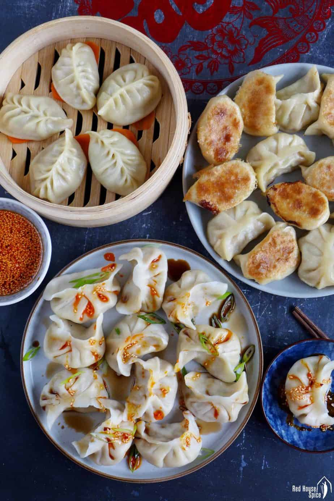
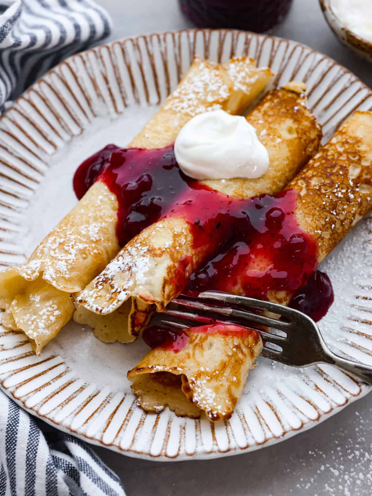
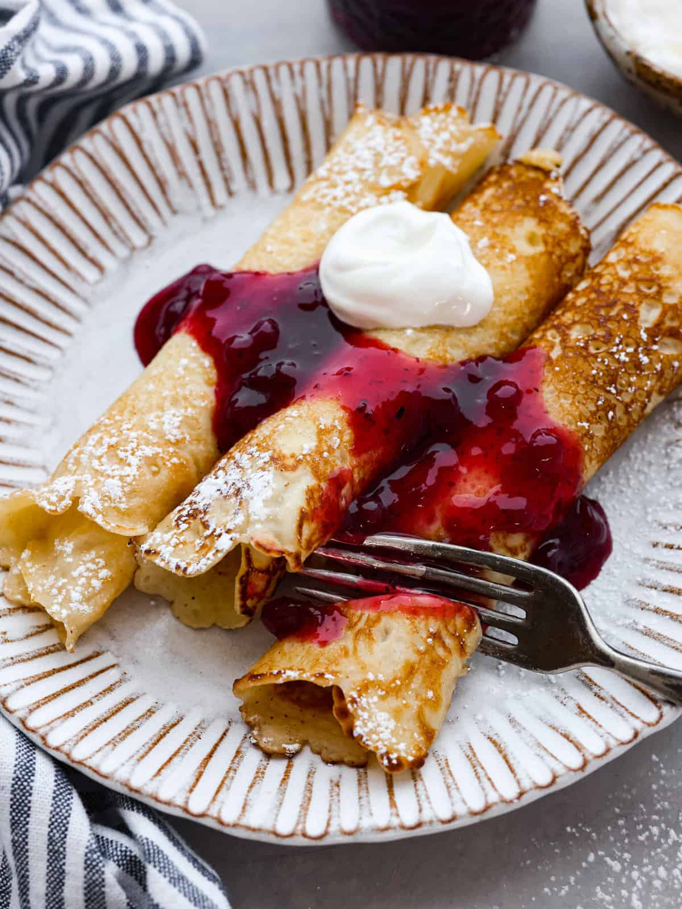

Recipes
Chinese Jiaozi

Chinese dumplings (Jiaozi, 饺子) are stuffed parcels made of unleavened dough and savory fillings consisting of minced ingredients like meat, egg, tofu, or vegetables. They can be boiled, pan-fried or steamed.
Recipe Ingredients: flour, water, pork, cabbage.
Recipe Steps: Dough, Filling, Folding, Cooking, Dipping sauces.
Chinese Jiaozi Photo Gallery

Swedish Pancakes

Recipe Ingredients:
- Butter
- Sugar
- Eggs
- Vanilla
- Milk
- Water
- Salt
- Flour
Recipe Steps:
1. First combine all ingredients in a blender and blend until completely smooth.
2. Transfer to the refrigerator to rest for at least 2 hours or up to 2 days.
3. Preheat the oven to 200 degrees if you plan to eat the pannkakor right away.
4. Heat a 10 inch nonstick skillet over medium heat.
5. Stir the batter briefly to recombine.
6. Brush skillet with melted butter.
7. Pick the skillet up off of the burner and quickly add ¼ cup of batter.
8. Immediately begin swirling the batter around the skillet so that it coats the bottom of the pan.
9. Continue swirling until the batter is just set. Return skillet to the burner. Cook until the pancake is golden brown in spots on the bottom, about 30 seconds.
10. Use a thin spatula to loosen the pancake, flip it over continue to cook on the other side for about 30 seconds. Transfer to a plate.
11. Cover with foil and transfer to oven to keep warm and repeat with remaining batter, wiping out skillet in between pancakes with paper towel as needed.
12. Serve with lingonberry jam and butter (see note below) or other desired toppings and/or fillings.
Swedish Pancakes Photo Gallery
 

Zucchini Fritters

Recipe Ingredients:
1. Zucchini
2. Egg
3. Flour
4. Vegetable/seed oil
5. Garlic
6. Salt and pepper
Recipe Steps:
1. Combine eggs, salt, and pepper and whisk
2. Add pressed garlic
3. Gate the zucchini and squeeze the moisture out of it
4. Add zucchini and flour and mix
5. Heat oil in pan and add dollops of batter
6. Serve with or without dipping sauce
Zucchini Fritters Photo Gallery